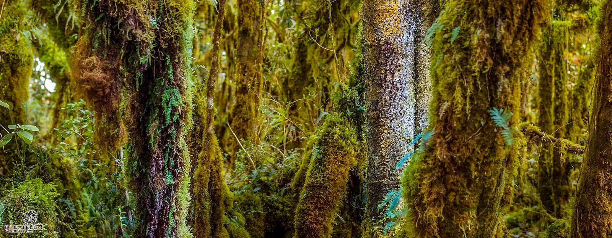

O6 · Oeste
O6 · Westen
O6 · West
Laguna de Guatavita
Vi una laguna misteriosa en medio de los Andes, que cuenta la leyenda que allí los hombres entregaban el oro a los dioses.
Ich sah eine geheimnisvolle Lagune mitten in den Anden, in der, so erzählt die Legende, die Menschen den Göttern das Gold übergaben.
I saw a mysterious lagoon in the middle of the Andes where, the legend says, men gave gold to the gods.
Información
La laguna de Guatavita fue el principal centro de ofrendas religiosas del territorio muisca. En las lagunas de altura se celebraban grandes ceremonias: los pueblos se reunían bajo la conducción de sus caciques y sus sacerdotes para ofrendar a los dioses.
Según el relato que dio origen a la leyenda de El Dorado, un cacique poderoso entraba con sus sacerdotes en una balsa hasta el medio de la laguna y arrojaba al agua oro y esmeraldas. La Balsa Muisca del Museo del Oro, encontrada en 1969, representa esa ceremonia: para los muiscas, un punto de contacto con otros niveles del cosmos.
Information
La laguna de Guatavita fue el principal centro de ofrendas religiosas del territorio muisca. En las lagunas de altura se celebraban grandes ceremonias: los pueblos se reunían bajo la conducción de sus caciques y sus sacerdotes para ofrendar a los dioses.
Según el relato que dio origen a la leyenda de El Dorado, un cacique poderoso entraba con sus sacerdotes en una balsa hasta el medio de la laguna y arrojaba al agua oro y esmeraldas. La Balsa Muisca del Museo del Oro, encontrada en 1969, representa esa ceremonia: para los muiscas, un punto de contacto con otros niveles del cosmos.
Information
La laguna de Guatavita fue el principal centro de ofrendas religiosas del territorio muisca. En las lagunas de altura se celebraban grandes ceremonias: los pueblos se reunían bajo la conducción de sus caciques y sus sacerdotes para ofrendar a los dioses.
Según el relato que dio origen a la leyenda de El Dorado, un cacique poderoso entraba con sus sacerdotes en una balsa hasta el medio de la laguna y arrojaba al agua oro y esmeraldas. La Balsa Muisca del Museo del Oro, encontrada en 1969, representa esa ceremonia: para los muiscas, un punto de contacto con otros niveles del cosmos.
Vi la laguna del oro con una herida abierta en el borde: la cortaron para vaciarla y robarles a los dioses sus ofrendas.
Ich sah die Lagune des Goldes mit einer offenen Wunde am Rand: sie haben sie aufgeschnitten, um sie zu leeren und den Göttern ihre Opfergaben zu stehlen.
I saw the lagoon of gold with an open wound at its rim: they cut it to drain it and rob the gods of their offerings.
Desde 1580 los encomenderos intentaron vaciar la laguna, y en cada intento aparecían piezas de oro y esmeraldas más ricas. Antonio de Sepúlveda —con quien la Corona española había firmado en 1562 un acuerdo sobre el oro, la plata, las perlas y las piedras que pudieran sacarse de ahí— hizo un segundo intento con instrumentos construidos para eso, extrajo una enorme cantidad de agua y sacó una esmeralda de gran valor, asentada en los libros reales.
El corte que abrieron en el borde para desaguarla todavía se ve.
Desde 1580 los encomenderos intentaron vaciar la laguna, y en cada intento aparecían piezas de oro y esmeraldas más ricas. Antonio de Sepúlveda —con quien la Corona española había firmado en 1562 un acuerdo sobre el oro, la plata, las perlas y las piedras que pudieran sacarse de ahí— hizo un segundo intento con instrumentos construidos para eso, extrajo una enorme cantidad de agua y sacó una esmeralda de gran valor, asentada en los libros reales.
El corte que abrieron en el borde para desaguarla todavía se ve.
Desde 1580 los encomenderos intentaron vaciar la laguna, y en cada intento aparecían piezas de oro y esmeraldas más ricas. Antonio de Sepúlveda —con quien la Corona española había firmado en 1562 un acuerdo sobre el oro, la plata, las perlas y las piedras que pudieran sacarse de ahí— hizo un segundo intento con instrumentos construidos para eso, extrajo una enorme cantidad de agua y sacó una esmeralda de gran valor, asentada en los libros reales.
El corte que abrieron en el borde para desaguarla todavía se ve.
Galería
Galerie
Gallery


Fuentes
Quellen
Sources
- Banco de la República, Museo del Oro, Colombia, Muisca: Parque Natural Laguna de Guatavita — https://banrepcultural.org/museo-del-oro/sociedades/muisca/parque-natural-laguna-de-guatavita consultado 2026-10-06abgerufen 2026-10-06accessed 2026-10-06
- Banco de la República, Boletín Museo del Oro, Las primeras exploraciones en la laguna de Guatavita — https://publicaciones.banrepcultural.org/index.php/bmo/article/view/7340 consultado 2026-10-06abgerufen 2026-10-06accessed 2026-10-06